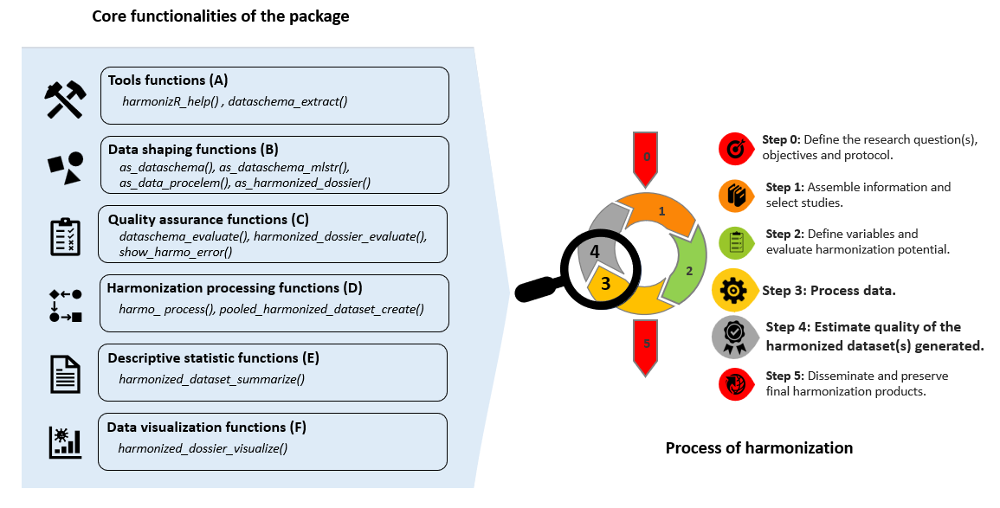

vignettes/b-Understand-the-workflow.Rmd
b-Understand-the-workflow.RmdIn a typical harmonization process, Rmonize functions use a few main inputs: input datasets, input data dictionaries, the DataSchema, and the Data Processing Elements. These inputs are generally created in other programs, imported into R, and prepared as needed to match the specific formats required by Rmonize functions.
These inputs provide the information used to evaluate and document the harmonization process and harmonized datasets produced (Steps 4 and 5). The DataSchema and Data Processing Elements are first created in spreadsheets (typically from Excel templates) and imported into R. These elements are mandatory in the technical process of harmonization in this package.

To function properly, the harmonization process requires a clear mapping or association between the input variables in the input dataset and the harmonized variables to be generated in the output harmonized dataset. This mapping is typically defined using the Data Processing Elements (DPE) and the DataSchema.
The DataSchema, provides a structured description of the target harmonized variables to be generated. It includes information such as variable names, data types, and any other relevant metadata needed for the harmonization process.
The DPE specifies the processing rules (e.g., transformations, combinations, conditional processing) necessary to derive the harmonized variables from the input variables.
Input datasets are first imported into R and must exist in the environment as data frames (or data frame extensions, e.g., tibbles). Then by using using the DPE in conjunction with the DataSchema, the harmonization process can accurately extract, process, and create harmonized variables in the output datasets based on the variables found in the input datasets. This ensures that the harmonization is done correctly and consistently across different datasets from various and heterogeneous origins.
For each input dataset provided, the harmonization process generates a corresponding output harmonized dataset in a harmonized dossier. The structure of each harmonized dataset is standardized, all with the same variables (names, valueType), as specified in the DataSchema, with the addition of harmonization metadata (e.g., harmonization status and harmonization details specified by the user).
The standardized documentation and functions for description and assessment of harmonized data facilitate further use by researchers for analyses and comparisons.